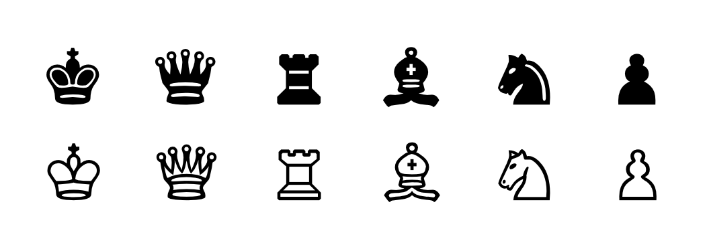
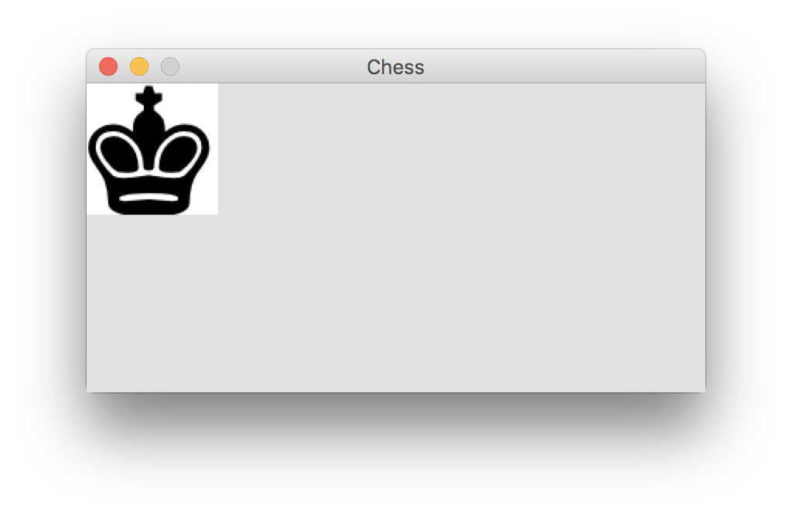
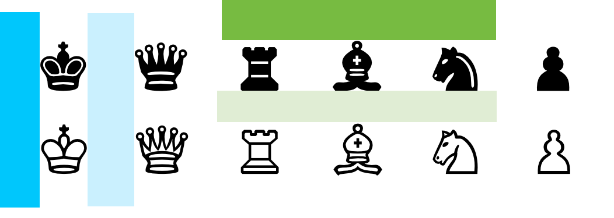
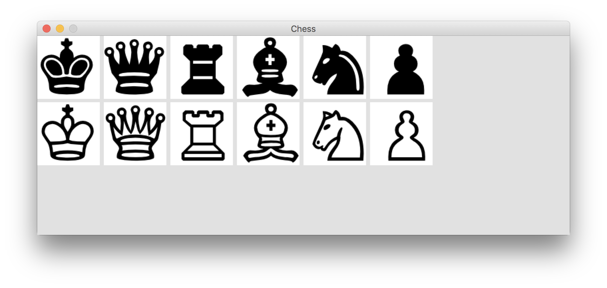

Using Sprite Sheets in Pygame
When we built Alien Invasion, we only needed two images: one for the ship, and one for the alien. In some games, however, you’ll need lots of different images.
Game developers realized a long time ago that loading many images from separate files causes a game to run really slowly, so people came up with the idea of sprite sheets. A sprite sheet is a single file that contains many smaller images, all on a plain or transparent background. To use a sprite sheet, you load the sprite sheet as a single large image, and then you load the individual images from the sprite sheet image. This turns out to be much more efficient than loading a bunch of separate image files.
For this example we’ll look at how you can load a full set of chess pieces from one sprite sheet. To build a chess game, you need 12 pieces: a black and white king, queen, rook, bishop, knight, and pawn. Instead of loading 12 separate images, we’ll load one image that contains an icon for each of these pieces. We’ll then create 12 separate objects representing each of these pieces. What you learn in this guide will be useful any time you want to load a number of icons from a single image file.
- A Simple Sprite Sheet
- Starting a Chess Game
- Modeling a Chess Piece
- Modeling a Chess Set
- Loading Your Own Images
- Final Words
A Simple Sprite Sheet
Here’s the sprite sheet we’ll work with:

The book’s author says he doeswnloaded this image from Public Domain Clip Art, and converted it to a .bmp file. You can right click and save the image file from this page, or you can find it in the beyond_pcc folder when you download the resources for the book.
Starting a Chess Game
We’re not going to make a chess game in this tutorial, but we’ll set up this project so you could continue to expand on it and start building a game if you want to. So let’s start with a simple Pygame file, just like we did for Alien Invasion. Make a folder called chess_game, and save this file as chess_game.py:
"""Chess game, for learning to grab images from a sprite sheet."""
import sys
import pygame
from settings import Settings
class ChessGame:
"""Overall class to manage game assets and behavior."""
def __init__(self):
"""Initialize the game, and create resources."""
pygame.init()
self.settings = Settings()
self.screen = pygame.display.set_mode(
(self.settings.screen_width, self.settings.screen_height))
pygame.display.set_caption("Chess")
def run_game(self):
"""Start the main loop for the game."""
while True:
self._check_events()
self._update_screen()
def _check_events(self):
for event in pygame.event.get():
if event.type == pygame.QUIT:
sys.exit()
elif event.type == pygame.KEYDOWN:
if event.key == pygame.K_q:
sys.exit()
def _update_screen(self):
self.screen.fill(self.settings.bg_color)
pygame.display.flip()
if __name__ == '__main__':
chess_game = ChessGame()
chess_game.run_game()
And here’s settings.py:
class Settings:
def __init__(self):
self.screen_width, self.screen_height = 1200, 800
self.bg_color = (225, 225, 225)
This gives us an empty game window, and we can press ‘q’ to quit the game at any time. I like to have this option because sometimes I run games in fullscreen mode, and you can’t click the close button in fullscreen mode.
You’ll also need to create an images folder, and save the sprite sheet as chess_pieces.bmp in this folder.
Modeling a Chess Piece
A chess set is made up of a number of pieces. Let’s think about the pieces first. Each piece needs a name and a color, and an image. We need to be able to draw each piece to the screen. In a fully implemented game we might add attributes such as starting_position, current_position, captured, and others.
We’ll make a file called chess_set.py, which will contain a class for representing pieces and a class for representing the set as a whole. Here’s the start of that file, with the Piece class defined:
"""Module to represent a chess set, and individual pieces."""
class Piece:
"""Represents a chess piece."""
def __init__(self, chess_game):
"""Initialize attributes to represent a ches piece."""
self.image = None
self.name = ''
self.color = ''
self.screen = chess_game.screen
# Start each piece off at the top left corner.
self.x, self.y = 0.0, 0.0
def blitme(self):
"""Draw the piece at its current location."""
self.rect = self.image.get_rect()
self.rect.topleft = self.x, self.y
self.screen.blit(self.image, self.rect)
The Piece class allows us to assign each piece an image, a name, and a color. Each piece will start off at the top left corner, but we can move it wherever it needs to go. The only argument needed to create a piece initially is a reference to the overall game object. When we’re ready to draw a piece to the screen, we can do so by calling blitme().
Modeling a Chess Set
Now we can start to model the set as a whole. The set will handle the task of creating all the pieces. In a fuller implementation, it might also track attributes such as the overall strength of the player’s remaining pieces, which can be useful in developing playing strategies.
The ChessSet class
Here’s the start of the ChessSet class. To begin with, we want an __init__() method that accepts the overall game object, and we want to call a helper method that builds the pieces that make up the set. Add this code to chess_set.py:
"""Module to represent a chess set, and individual pieces."""
class ChessSet:
"""Represents a set of chess pieces.
Each piece is an object of the Piece class.
"""
def __init__(self, chess_game):
"""Initialize attributes to represent the overall set of pieces."""
self.chess_game = chess_game
self.pieces = []
self._load_pieces()
def _load_pieces(self):
"""Builds the overall set:
- Loads images from the sprite sheet.
- Creates a Piece object, and sets appropriate attributes
for that piece.
- Adds each piece to the group self.pieces.
"""
pass
class Piece:
--snip--
We have an __init__() method which accepts a reference to the overall game object, and we have an attribute for storing the pieces in the set. We also call_load_pieces(), which is a stub for now.
Loading the first piece
When loading images from a sprite sheet, it’s helpful to start with a library if possible. If you search something like “pygame sprite sheet”, one of the top results is from the Pygame wiki. Here’s a cleaned-up version of the code featured there:
# This class handles sprite sheets
# This was taken from www.scriptefun.com/transcript-2-using
# sprite-sheets-and-drawing-the-background
# I've added some code to fail if the file wasn't found..
# Note: When calling images_at the rect is the format:
# (x, y, x + offset, y + offset)
# Additional notes
# - Further adaptations from https://www.pygame.org/wiki/Spritesheet
# - Cleaned up overall formatting.
# - Updated from Python 2 -> Python 3.
import pygame
class SpriteSheet:
def __init__(self, filename):
"""Load the sheet."""
try:
self.sheet = pygame.image.load(filename).convert()
except pygame.error as e:
print(f"Unable to load spritesheet image: {filename}")
raise SystemExit(e)
def image_at(self, rectangle, colorkey = None):
"""Load a specific image from a specific rectangle."""
# Loads image from x, y, x+offset, y+offset.
rect = pygame.Rect(rectangle)
image = pygame.Surface(rect.size).convert()
image.blit(self.sheet, (0, 0), rect)
if colorkey is not None:
if colorkey is -1:
colorkey = image.get_at((0,0))
image.set_colorkey(colorkey, pygame.RLEACCEL)
return image
def images_at(self, rects, colorkey = None):
"""Load a whole bunch of images and return them as a list."""
return [self.image_at(rect, colorkey) for rect in rects]
def load_strip(self, rect, image_count, colorkey = None):
"""Load a whole strip of images, and return them as a list."""
tups = [(rect[0]+rect[2]*x, rect[1], rect[2], rect[3])
for x in range(image_count)]
return self.images_at(tups, colorkey)
Copy what you see here and save it as spritesheet.py, in the same folder where you saved chess_game.py.
This file contains a class called SpriteSheet that can help us work with sprite sheets. The method we’re most interested in is image_at(). To use this, we’ll make an object from the SpriteSheet class, passing it the location of our sprite sheet file. We’ll figure out which rectangular portion of the sprite sheet we want to load - the coordinates of its top left corner, and the width and height of the region we want to load. We’ll call image_at() with these four values.
If you look at the file chess_pieces.bmp, you can see that the left edge of the black king is about 68 pixels from the edge of the image, and the top of the king is about 70 pixels from the top edge of the image. These will be the first two values we pass to image_at(). The king is about 85 pixels wide by 85 pixels tall.
Here’s what we’ll do:
- Import the
SpriteSheetclass. - Create a
SpriteSheetobject. - Pull the image associated with the rectangle (68, 70, 85, 85).
- Create an object from the
Piececlass. - Assign this object the name
'king', the color'black', and the image we just pulled. - Add this object to the list
pieces.
We’ll do all of this in chess_set.py, in the _load_pieces() method:
"""Module to represent a chess set, and individual pieces."""
from spritesheet import SpriteSheet
class ChessSet:
--snip--
def _load_pieces(self):
"""Builds the overall set:
- Loads images from the sprite sheet.
- Creates a Piece object, and sets appropriate attributes
for that piece.
- Adds each piece to the list self.pieces.
"""
filename = 'images/chess_pieces.bmp'
piece_ss = SpriteSheet(filename)
# Create a black king.
b_king_rect = (68, 70, 85, 85)
b_king_image = piece_ss.image_at(b_king_rect)
b_king = Piece(self.chess_game)
b_king.image = b_king_image
b_king.name = 'king'
b_king.color = 'black'
self.pieces.append(b_king)
class Piece:
--snip--
There are many ways we could have done this. You can create the piece first, and then load the image, or you can load the image and assign it to the piece in one line. I’m doing it the way you see here because in a little bit I’m going to show you how to load all the images at once, and then write a loop that creates the pieces all at once as well.
To see the piece that we grabbed, let’s modify the _update_screen() method in chess_game.py:
"""Chess game, for learning to grab images from a sprite sheet."""
import sys
import pygame
from settings import Settings
from chess_set import ChessSet
class ChessGame:
"""Overall class to manage game assets and behavior."""
def __init__(self):
"""Initialize the game, and create resources."""
pygame.init()
self.settings = Settings()
self.screen = pygame.display.set_mode(
(self.settings.screen_width, self.settings.screen_height))
pygame.display.set_caption("Chess")
self.chess_set = ChessSet(self)
def run_game(self):
"""Start the main loop for the game."""
while True:
self._check_events()
self._update_screen()
def _check_events(self):
for event in pygame.event.get():
if event.type == pygame.QUIT:
sys.exit()
elif event.type == pygame.KEYDOWN:
if event.key == pygame.K_q:
sys.exit()
def _update_screen(self):
self.screen.fill(self.settings.bg_color)
# Draw the black king in its current position.
self.chess_set.pieces[0].blitme()
pygame.display.flip()
if __name__ == '__main__':
chess_game = ChessGame()
chess_game.run_game()
We first import ChessSet. Then in __init__() we make an attribute called chess_set, which is an object of the ChessSet class. This object needs a reference to the overall game object, which in this file is represented by self. In _update_screen(), we call blitme() on the first (and only) piece in the set.
The output shows the black king in the upper left corner of the game window:

We’ve pretty much got the image we want. We might want to go back and refine the rectangle we used for pulling this image, to even out the amount of background on each of the margins.
Don’t be surprised if you see a much different area of the sprite sheet than you were expecting when you run your own code. It can take a bit of practice to understand how to choose the right rectangle coordinates, and even with practice it’s easy to make a mistake that grabs the wrong part of the sprite sheet. If you see a black rectangle, it’s possible you asked for a portion of the sprite sheet that doesn’t exist.
Loading all the pieces
As mentioned earlier, it’s possible to load all of the images we need from the spritesheet at once, and then assign each one to the appropriate piece. This can be much easier than figuring out the coordinates by hand for each individual piece, especially if you’re working with multiple sprite sheets.
Consider the original sprite sheet again, this time with a couple aspects of the sheet highlighted:

The dark blue rectangle shows the space to the left of the first column, which we can call a margin. The light blue region shows the horizontal space between columns, which we can call padding. The dark green bar shows the margin above the first row, and the light green bar shows the vertical padding between each row.
These spacings allow us to work out a pattern for where each image should be grabbed. For example the left position of the black king is equal to the width of the horizontal margin. The left position of the black queen is equal to the width of the horizontal margin, plus the width of a piece, plus the width of one strip of padding. For the third icon in the first row, the horizontal position is one margin width, plus two padding widths, plus two icon widths. The width of an icon should be the width of the overall image, minus the space taken by the margins and padding, divided by the number of columns.
If you want a challenge, try adding a method called load_grid_images() to SpriteSheet. The method should take in the following arguments: num_rows, num_cols, x_margin, x_padding, y_margin, and y_padding. The method should use these values to figure out the width and height of each piece, and call image_at() with the appropriate parameters. You should be able to call load_grid_images() with the appropriate values, and the method should return a list of all sprites in the sprite sheet. If you want to try this, pause and try it now, because I’m going to show that method and then we’ll use it to load the rest of the pieces.
The load_grid_images() method
Here’s the load_grid_images() method, which we can add on to the end of SpriteSheet:
--snip--
class SpriteSheet:
def __init__(self, filename):
--snip--
def image_at(self, rectangle, colorkey = None):
--snip--
def images_at(self, rects, colorkey = None):
--snip--
def load_strip(self, rect, image_count, colorkey = None):
--snip--
def load_grid_images(self, num_rows, num_cols, x_margin=0, x_padding=0,
y_margin=0, y_padding=0):
"""Load a grid of images.
x_margin is space between top of sheet and top of first row.
x_padding is space between rows.
Assumes symmetrical padding on left and right.
Same reasoning for y.
Calls self.images_at() to get list of images.
"""
sheet_rect = self.sheet.get_rect()
sheet_width, sheet_height = sheet_rect.size
# To calculate the size of each sprite, subtract the two margins,
# and the padding between each row, then divide by num_cols.
# Same reasoning for y.
x_sprite_size = ( sheet_width - 2 * x_margin
- (num_cols - 1) * x_padding ) / num_cols
y_sprite_size = ( sheet_height - 2 * y_margin
- (num_rows - 1) * y_padding ) / num_rows
sprite_rects = []
for row_num in range(num_rows):
for col_num in range(num_cols):
# Position of sprite rect is margin + one sprite size
# and one padding size for each row. Same for y.
x = x_margin + col_num * (x_sprite_size + x_padding)
y = y_margin + row_num * (y_sprite_size + y_padding)
sprite_rect = (x, y, x_sprite_size, y_sprite_size)
sprite_rects.append(sprite_rect)
grid_images = self.images_at(sprite_rects)
print(f"Loaded {len(grid_images)} grid images.")
return grid_images
This might look like a long method, but it’s only about 15 lines of code. Real-world functions and classes can include more comments than you typically see in books. It’s also a little longer than it needs to be, for clarity in a tutorial. For example if you didn’t need to see how many images were loaded, you could collapse the last three lines into one line:
return self.images_at(sprite_rects)
Using load_grid_images()
We’ll first use this method to load all the images, and see if it’s grabbing all the correct portions of the sprite sheet. We’ll do this in _load_pieces(), in ChessSet:
def _load_pieces(self):
"""Builds the overall set:
- Loads images from the sprite sheet.
- Creates a Piece object, and sets appropriate attributes
for that piece.
- Adds each piece to the list self.pieces.
"""
filename = 'images/chess_pieces.bmp'
piece_ss = SpriteSheet(filename)
# Load all piece images.
piece_images = piece_ss.load_grid_images(2, 6, x_margin=64,
x_padding=72, y_margin=68, y_padding=48)
# Create a new Piece object for every image.
for image in piece_images:
piece = Piece(self.chess_game)
piece.image = image
self.pieces.append(piece)
We use load_grid_images() to load 2 rows with 6 columns each, and specify appropriate margin and padding amounts. We then create one Piece object for every image that was loaded; we’ll take care of setting the name and color values in a moment.
When we run chess_game.py again, we should see the black king in the upper left corner, since it was the first piece loaded. This works; the game window looks just like it did when we loaded a single image, with a slightly different cropping region.
Setting values for name and color
There’s a pattern in the sprite sheet, which we can use to efficiently set the name and color values for each piece. We’ll create a list of colors, and a list of piece names. Then we’ll set up nested loops that cycle through the pieces in the same order that load_grid_images() works, one row at a time.
Here’s the complete _load_pieces():
def _load_pieces(self):
"""Builds the overall set:
- Loads images from the sprite sheet.
- Creates a Piece object, and sets appropriate attributes
for that piece.
- Adds each piece to the list self.pieces.
"""
filename = 'images/chess_pieces.bmp'
piece_ss = SpriteSheet(filename)
# Load all piece images.
piece_images = piece_ss.load_grid_images(2, 6, x_margin=64,
x_padding=72, y_margin=68, y_padding=48)
# Create a Piece for each image.
colors = ['black', 'white']
names = ['king', 'queen', 'rook', 'bishop', 'knight', 'pawn']
piece_num = 0
for color in colors:
for name in names:
piece = Piece(self.chess_game)
piece.name = name
piece.color = color
piece.image = piece_images[piece_num]
self.pieces.append(piece)
piece_num += 1
We load all the piece images, just as we did before. Then we set a counter, piece_num, to keep track of how many pieces we’ve made. This will serve as an index to the image we want from the list piece_images. We loop through the colors, and then through the names. This will result in processing each of the black pieces, and then each of the white pieces. For each piece, we set the appropriate values, add it to the list self.pieces, and increment the value of piece_num.
When we run chess_game.py again, we should still see the black king because it’s always the first piece in the list.
Seeing all the pieces
Now let’s check that all of the pieces were pulled correctly. We can do this in _update_screen(), in chess_game.py:
def _update_screen(self):
self.screen.fill(self.settings.bg_color)
# Draw a row of black pieces.
for index, piece in enumerate(self.chess_set.pieces[:6]):
piece.x = index * 100
piece.blitme()
# Draw a row of white pieces.
for index, piece in enumerate(self.chess_set.pieces[6:]):
piece.x = index * 100
piece.y = 100
piece.blitme()
pygame.display.flip()
We loop through the first 6 pieces. For each piece, we set the x value 100 higher than the piece before it. If you haven’t seen the enumerate() function yet, it’s mentioned on page 335 in the book. The enumerate() function returns the index and the value of each item as you loop through a list. We do the same for the white pieces, except we set the y value to 100 so they appear as a second row.
Here we can see that all of the pieces were grabbed appropriately:

Making mistakes
When you’re reading a tutorial like this, it’s easy to think that everything is supposed to work out perfectly the first time you write your code. That’s not at all the case! I made a number of mistakes in the process of working out load_grid_images(), and more mistakes when using it to grab the images for each piece. For example when I first called load_grid_images(), I mixed up the values for the number of rows and columns. When I ran chess_game.py, I saw a blank game window. I had no idea why the images weren’t being grabbed. I ended up looking at the value of sprite_rect in load_grid_images(), and saw that the width of the image being grabbed was negative. That led me back to looking at the values I was passing to load_grid_images(), and I spotted the mixup. But it took a while, and it was not at all obvious what was going on at first.
If I were going to use this module to create a lot of games using sprite sheets, or if I was maintaining this for a widely-distributed package, I’d probably add some error-checking code to make sure all of the sizes in load_grid_images() come out positive. But I’m trying to keep things simple for now, so I’m not adding that degree of error-checking at this point.
If you run into mistakes in the game you’re working on, or any project you find yourself involved in, please know that everyone makes mistakes almost every single day. You are not alone. :)
Loading Your Own Images
Some people like to place files like spritesheet.py in a directory called utils inside their main project folder, and then their import statement looks like this:
from utils.spritesheet import SpriteSheet
This makes it clear what code is specific to your game, and what code is a utility module that could be used for any game. If you’re making a lot of games, you can place the utils directory in a location that’s accessible to all your games, so you don’t have a bunch of copies of the same utility module all over your system.
You can find the full spritesheet.py module here. It’s also in the beyond_pcc folder in the zip file of online resources for the book. If you don’t see that folder, you might need to download a newer copy of the online resources, as I’ve just recently added this section.
Final Words
Groups vs Lists
The point of this guide was to show how you can load images from a sprite sheet when using Pygame. There’s a lot that we might do differently if we were focused on building a fully-functioning chess game. For example, should we store the pieces in a list like we did, or should they be placed into a Pygame Group? I used a list here because a list is ordered, and The book’s author says he wantsed the order of self.pieces to match the order we see in the sprite sheet. A group is not ordered, so it wouldn’t necessarily work for this purpose. A group is great when you want to repeatedly draw a bunch of elements to the screen, and the order you’re keeping them in doesn’t matter.
Sprite sheets with non-uniform grids
Many sprite sheets are set up in a grid like we saw with chess_pieces.bmp. For example a deck of cards might have four rows of 13 cards each, and maybe an extra row for a card back and a joker. However, some sprite sheets have icons of different sizes on them. In that case you might be able to call load_grid_images() for most of the icons, and then call image_at() for some of the oddly-sized icons.
Determining margin and padding sizes
If you’re not sure how to determine pixel sizes on a sprite sheet, try opening the file in an image previewer or editor. Most viewers and editors allow you to make selections in a way that shows you the dimensions of the selection in pixels. For example on macOS you can open Preview, click Tools > Rectangular Selection, and drag a rectangle around the region you want to measure. A small popup will show you the width and height of the rectangular region you have selected.
If you’re completely at a loss, make a guess and see how accurately the first image is grabbed. That should allow you to work out the size of the margins, and looking at the second image should allow you to work out the padding.